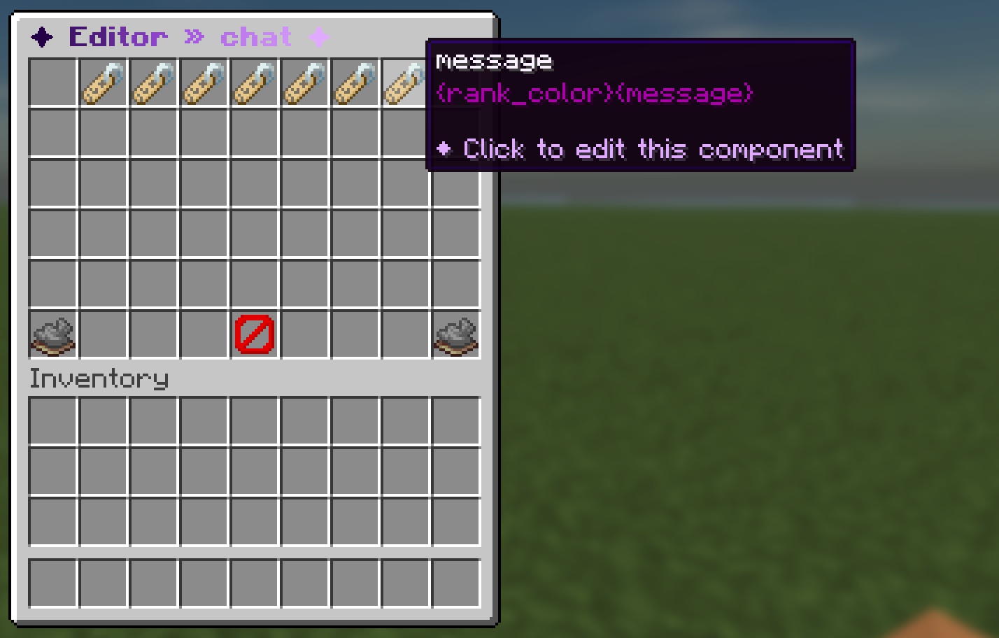

A chat format decides how a message looks: the rank prefix, the name, the separator and the message, each with its own hover text and click action. Formats use MiniMessage, so gradients, hex colors and decorations work everywhere.
Chat formatting is on by default. The shipped format already shows the rank, a party tag, a rich hover card (rank, party, money, time played, ping and marriage) and a staff-only delete button. New to formats? Start with the step-by-step guide Your first chat.

How to turn it on
Formatting is controlled in plugins/Chatalyst/chat.yml:
Chat:
# Enable or disable Chatalyst chat formatting.
Enabled: true
# What clicking a player name in chat suggests ({msg_command} in the formats):
# mail = /inbox send <player> (works even with private messages disabled; default)
# msg = /msg <player> (only when Private_Messages.Enabled is true;
# falls back to mail otherwise)
Name_Click_Prefer: mail
# Name of the file (without .yml) inside formats/ used by default.
Default_Format: chatEach format is a file in plugins/Chatalyst/formats/. A channel picks its format with its Format field. The shipped files are:
| File | Used for |
|---|---|
chat.yml |
Global, local, region and party chat. |
staff.yml |
The staff channel. |
trade.yml / auction.yml |
The trade and auction channels. |
pm-sender.yml / pm-receiver.yml |
Private messages. |
spy.yml |
What staff see in private-message spy. |
Configuration
Parts
A format is an ordered list of parts under Parts. This is a shortened copy of the shipped formats/chat.yml:
Parts:
# Visible only to players with chatalyst.deletemessages, and automatically omitted
# when Paper did not supply a usable signed-message signature for the line.
delete:
Message: "<#7B68A0>[<#FF4D6D>x<#7B68A0>] <reset>"
Hover: "<#FF4D6D>{$delete-msg}"
Run_Command: "/chatalyst removemessage {message_uuid}"
View_Permission: chatalyst.deletemessages
prefix:
Message: "%luckperms_prefix%{tag_prefix}"
Suggest_Command: "{msg_command}"
party:
Message: "{party_tag}"
player-name:
Message: "<reset>{rank_nick}"
Suggest_Command: "{msg_command}"
suffix:
Message: "{tag_suffix}%luckperms_suffix%"
separator:
Message: " <#7B68A0>» <reset>"
message:
Message: "{rank_color}{message}"The part that contains {message} is where the player's text goes.
| Field | What it does |
|---|---|
Message |
MiniMessage text. Supports {...} and %...% placeholders. |
Hover |
One line or a list of lines shown on mouse-over. |
Run_Command |
Runs a command on click. |
Suggest_Command |
Fills the chat box with a command on click. |
Open_Url |
Opens a URL on click. |
Copy_To_Clipboard |
Copies text on click. |
Insertion |
Inserts text into the chat box on shift-click. |
Sender_Permission / Receiver_Permission |
Shows the part only if the sender (or the reader) has the permission. Prefix ! to negate. |
Sender_Variable / Receiver_Variable |
"{placeholder} expected" comparison. |
Sender_Condition / Receiver_Condition |
Sandboxed JavaScript condition (cached). |
View_Permission |
Older name for Receiver_Permission. |
Conditions
Sender_Variable and Receiver_Variable compare a placeholder against a value. The value can be plain text for equality, or start with !=, >, >=, <, <=, contains:, starts:, ends:, in: (comma list) or regex:. Example: "{player_group} in:helper,mod,admin".
Sender checks run once per message; only receiver checks run per reader. Prefer permissions and variables over JavaScript conditions on busy servers.
Tip
The prefix part uses %luckperms_prefix%, which needs PlaceholderAPI and its LuckPerms expansion. Without them, use {player_prefix}, which Chatalyst reads from LuckPerms or Vault directly.
Rank colors
{rank_color} is the first color of the player's rank prefix. The shipped format paints the name and the message with it, so every rank matches automatically. {rank_gradient} builds a matching neon gradient from that color and is used for the divider bars in the hover. Replace them with fixed colors if you prefer.
Items, inventories, emojis and pixel tokens
Players can add rich content to their messages:
| Typed in chat | Result | Permission (default) |
|---|---|---|
[item] or [i] |
The held item with its full tooltip. | chatalyst.chat.item (true) |
[inv], [inventory], [inventario] |
A read-only view of the inventory, open for 5 minutes. | chatalyst.chat.shareinv (true) |
[ec], [enderchest] |
A read-only view of the ender chest. | chatalyst.chat.shareinv (true) |
:heart:, :star:… |
A Unicode symbol. /cht emojis lists them. |
chatalyst.chat.emoji (true) |
[creeper], [diamond]… |
A styled label with an item preview. | chatalyst.chat.pixel (true) |
| A URL | A clickable link. | chatalyst.chat.links (op) |
| MiniMessage tags | Colors in the player's own message. | chatalyst.chat.color (op) |
| Option | Default | What it does |
|---|---|---|
Clickable_Links |
true |
Makes links clickable for players with chatalyst.chat.links. |
Item_Placeholder |
true |
Enables [item]. |
Item_Custom_Ids |
true |
Adds the Nexo or ItemsAdder id of custom items to the [item] tag. |
Inventory_Share |
true |
Enables [inv] and [ec]. |
Pixel_Images.Enabled |
true |
Enables pixel tokens. |
Emojis.Enabled |
true |
Enables :name: emojis. |
Emojis.Custom |
shrug, tableflip |
Your own emojis (name: symbol). They can override built-ins. |
Party_Tag |
"<#7B68A0>[<#B56CFF>{party}<#7B68A0>] " |
How {party_tag} looks for players in a party. |
Pixel tokens are defined under Chat.Pixel_Images.Tokens:
Pixel_Images:
Enabled: true
Tokens:
creeper:
Material: CREEPER_HEAD
Display: "<#7B68A0>[<#3DFFA8>Creeper<#7B68A0>]"
Hover: "<#3DFFA8>Creeper Head"Note
Vanilla Minecraft cannot draw color emoji pictures, only Unicode symbols. For picture emojis use ItemsAdder font images: Chatalyst converts their :name: tokens in chat and nicknames, and respects ItemsAdder's per-emoji permissions. Readers need the resource pack.
/me, /say and grammar
# /me format (third-person action). {message} = the action typed.
Me:
Format: "<#C0B3D9>* <#FBF2FF>{player_name} <#C0B3D9>{message}"
# /say format (server message).
Say:
Format: "<#7B68A0>[<#B56CFF>Server<#7B68A0>] <#E0AAFF>{message}"
Format_es: "<#7B68A0>[<#B56CFF>Servidor<#7B68A0>] <#E0AAFF>{message}"
Grammar:
Enabled: false
Capitalize: true # capitalize the first letter
Punctuation: true # add a period at the end
Min_Length: 4Grammar is off by default. When on, it capitalizes the first letter and adds a final period to messages of at least Min_Length characters.
Hiding ignored players
Chat.Ignore.Hide_In_Chat (default true) collapses public messages from players you /ignore into a small "[ignored] name · [show]" marker. Clicking [show] reveals just that message.
Editing in game
/formatedit <format> opens a menu to edit each part without touching the file. /chatcolor lets each player choose a personal chat color, gradient and text styles, see Nicknames & colors.
Commands and permissions
| Command | Permission | What it does |
|---|---|---|
/formatedit <format> (/feditor) |
chatalyst.command.editor (op) |
Opens the graphical format editor. |
/chatcolor [color|reset] |
chatalyst.command.chatcolor (true) |
Opens the chat color menu or sets a color. |
/me <action> |
chatalyst.command.me (true) |
Third-person action. |
/say <message> |
chatalyst.command.say (op) |
Server message. |
/cht emojis |
none | Clickable list of emojis. |
chatalyst.deletemessages (op) shows the delete button in front of each message. See all permissions.
Limits
- The delete button only appears when Paper provides a valid signed-message signature for that line. Lines delivered by live translation cannot be retracted.
- Chat lines cannot be edited after they are sent, so animated names only update in new messages.
- PlaceholderAPI placeholders need PlaceholderAPI and the matching expansion installed.